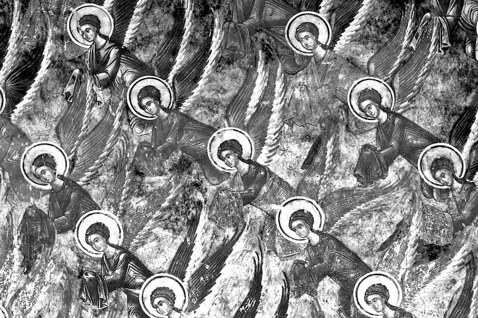

Interviu luat lui ÎPS Iustinian Chira,
Arhiepiscopul Maramureșului și Sătmarului
Înalt Prea Sfinția Voastră, sunteți cunoscut ca unul dintre ierarhii marcați de jertfa din închisorile comuniste. Spuneți-ne cum priviți această jertfă…
E greu să te exprimi în legătură cu ceea ce s-a întâmplat în timpul acestui regim. E aproape incredibil. Și de aceea nici nu știu anume ce-aș putea să spun. Lucrurile acestea nu se pot vorbi, nu se pot spune. Se trăiesc și se gândesc. Le-am trăit și le-am gândit. Și eu, și tot poporul. Așa a fost. Așa că, prin aceasta, poate că a fost îngăduit de Dumnezeu, așa cum a fost la poporul lui Israel, care a fost eliberat din Egipt și 40 de ani a fost purtat prin pustie – drum pe care puteau să-l facă într-o lună, de la Marea Roșie la Iordan, și totuși a fost rânduit de Dumnezeu, patruzeci de ani a fost purtat prin pustie, încât generația veche să dispară, să apară o generație nouă.
Probabil că și pentru noi, pentru România, o țară profund creștină – pentru că creștinismul nostru nu l-am îmbrăcat târziu, adică peste trupul unui popor păgân să îmbrăcăm o haină creștină, așa cum s-a întâmplat la celelalte popoare: la unguri, la germani, la ruși – erau popoare păgâne, și apoi s-au încreștinat.
Asta e una. Protopărinții noștri, adică strămoșii noștri n-au fost niciodată păgâni, ci paralel, în același timp cu apariția luminii lui Hristos în această lume, noi ne-am format ca neam. De aceea, avem un caracter profund creștin. Firea noastră e fire de creștin. De aceea, e un popor blând, e un popor care nu a asuprit și nu asuprește pe nimeni, un popor curat, un popor de asceți. Când îi văd pe toți, pe bărbați, pe femei, mi se pare că văd niște sfinți în fața ochilor. Așa arată chipul românilor.
Și atunci, poate că a îngăduit Dumnezeu – nu cu vrerea lui Dumnezeu a fost, dar a îngăduit să vină acest val de întuneric peste populație, peste Europa, pentru că au fost și multe păcate. Și în Rusia, și în Franța, și în Spania, unde au avut loc revoluțiile din epoca noastră, a avut creștinismul multe greșeli. Slujitorii lui Dumnezeu au avut multe greșeli, și de aceea Dumnezeu ne-a lăsat să ne încercăm, să ne maturizăm, ca să trecem prin acest foc, prin acest cuptor teribil, prin care am trecut.
Cum îi priviți pe cei care au pătimit în închisorile comuniste?
Toți aceștia care au pătimit în închisori au fost mielul de jertfă pentru iertarea păcatelor poporului român. Ei au fost aruncați în gura celor fără de Dumnezeu, ca să ispășească păcatele noastre, ale tuturor. Ei s-au jertfit pentru noi.
Și chiar dacă acuma se pune problema ca să fie trecuți în rândul sfinților, ei nu trebuie să fie trecuți în rândul sfinților. Ei sunt sfinți, prin sacrificiul lor. Oficial, pe dumneavoastră, domnule Vasile, vă admir și vă binecuvântez și mă bucur că vă luptați să fie trecuți din pușcării în Sinaxare, în rândul sfinților. Adică să fie și oficial trecuți, recunoscuți, declarați sfinți. Dar ei sunt, de fapt, sfinți. Ei s-au sfințit, s-au sanctificat.
Am citit astă-noapte cartea aceasta, Din temnițe spre Sinaxare. Toți aceștia s-au purificat total, a fost ca o lacrimă fiecare dintre cei care au murit în temniță. Ca o lacrimă curată a fost trupul fiecăruia, și gândul și viața fiecăruia. Erau sfinți, absolut sfinți, toți care au murit în închisoare, dar absolut toți care au murit în temniță, toți. Așa că, de aceea, despre aceste sacrificii uriașe e greu să vorbim. Vorbele nu pot exprima ceea ce, de fapt, aceste realități, aceste sacrificii extraordinare… eu le trăiesc: ziua, noaptea, mă gândesc la eroii și la martirii neamului românesc.
Ieri noapte mă gândeam la familia lui Constantin Brâncoveanu.
Teribil, că acest Constantin voievod, care a fost un voievod mai mult decât creștin (era sfânt din viață; a construit atâtea biserici Constantin Brâncoveanu, a format o cultură creștină în poporul român, deci el așa a fost!), n-a fost niciun motiv ca să fie condamnat de către turci. Singurul motiv era că Brâncoveanu Constantin era creștin. Și atât a fost de dureroasă această jertfă, adică Constantin și patru feciorași ai lui… în fața lui să li se taie capul, în fața lui… el a murit de patru ori. El, voievodul, tatăl, a murit cu fiecare copil căruia i s-a tăiat capul, a murit și el în momentul acela. El a murit de patru ori, și a cincea oară a murit el, apoi. Și iată ceva care nu trebuie să uităm, avem datorie să nu uităm!
Exact așa este și cu cei ce au fost uciși în pușcării: înainte de a fi uciși, au fost chinuiți, au trecut prin dureri grozave, prin suferințe teribile. Or, ce faceți dumneavoastră este un lucru care ar trebui să fie cu totul apreciat, pentru că ce faceți dumneavoastră e o lucrare care să ne ajute pe toată populația, tot poporul român, să nu uite. Că e foarte grav dacă n-ar fi cineva să ne amintească mereu de aceste jertfe.
Iată că sunt 18 ani de când ne-am eliberat, țara s-a eliberat de regimul care a ucis floarea societății românești. Nu numai Aiud! Aiud și Gherla și Sighet, în toată țara, – floarea, crema, ce-a avut poporul român mai de calitate a fost sacrificat, a dispărut. Or, iată că, de 18 ani, generația a început să uite. Ba am început să uităm și noi, bătrânii. A început și generația bătrână să-și uite…
Asta-i cel mai grav!
…foarte grav! Pentru că uitarea aduce pedeapsa. Dacă uiți lucrurile care nu trebuie uitate, jertfele, lucrurile cele importante dacă le uiți, în cazul acesta înseamnă că se poate întâmpla să se repete acest lucru. Dacă noi vom uita, sau dacă populația, sau dacă Europa va uita. Celelalte țări nu au experiența pe care am avut-o noi. Nu au această experiență toate celelalte țări! Ei mai pot să se facă că au uitat nu-știu-ce, pentru că n-au trecut prin experiența prin care am trecut noi. Chiar nici celelalte țări care au făcut parte din așa-zisul lagăr socialist, nici ele n-au trecut prin greutățile, prin suferințele, prin nedreptățile pe care le-am suportat noi din partea acestui regim, acestui sistem marxist ateu.
Nu pomenesc, vezi?, numele de comunist, pentru că între comuniști sunt și buni și răi. Nu regimul, sistemul este diabolic. Sistemul marxist, acesta este diabolic. Regimurile fac parte din cadrul unui sistem, care e sistemul marxist ateu diabolic, care a fost bine gândit. Și acest sistem și această gândire nu au dispărut. Are încă și acuma, pregătește și acuma, pentru omenire, ca să repete ce-au repetat aceste regimuri comuniste până acuma, de 50 de ani.
Forțele întunecate ale sistemului marxist ateu nu au dispărut. Dimpotrivă, lucrează pe toate fronturile, cu alte mijloace. Și cel dintâi lucru de care se folosește această forță a întunericului este uitarea. Încearcă să ne facă să uităm ce-a pătimit populația și Europa din cauza acestui sistem. Așa cum de fapt se încearcă, sunt și acum aceste tendințe, ca să-i facă pe evrei să uite ce-au pătimit, să uite victimele lor care au murit, pe care i-a ars în cuptoare hitlerismul. Caută aceștia, dușmanii vieții omenești, aceste forțe negative, din beznă, caută și pe evrei să-i facă să uite ceea ce au pătimit, ca din nou să poată să repete acest lucru. Așa că tot așa și la noi este absolut necesar ca să nu uităm, ca să nu se repete. Uitând, uitarea ne poate arunca din nou în prăpastia din care am ieșit.

Înalt Prea Sfinția voastră ați cunoscut părinți care au trecut prin închisori? Ce ne puteți spune despre ei?
Am cunoscut mulți. De ce? Pentru că cei ce au făcut pușcărie, când se eliberau – înainte de ’64, înainte – care avea o condamnare de mai puțini ani, când pleca din pușcărie, se știe că trebuia să dea o declarație, în care să declare că nu vor comunica, nu vor spune nimănui, nici la soție, nici la părinți, nici la copii, nici la prieteni ce au pătimit ei acolo, cum au fost chinuiți ei. Dădeau declarație! Dar oamenii simt nevoia să se confeseze, să mărturisească, adică, din suflet.
Și atunci, de foarte multe ori, mergeau totuși la cineva – nu îndrăzneau să spună ce-au pătimit nici la familie, nici la prieteni, și atunci oamenii căutau oameni de care erau apropiați cu sufletul – și anume, cei mai apropiați erau duhovnicii. Mergea omul și spunea, în taină, prin câte a trecut, ce-a pătimit, că simțea nevoia! Că era plin sufletul de durere, și simțea nevoia să spună la cineva ce-au suferit ei.
Și atunci, cei dintâi oameni de încredere ai tuturor celor ce ieșeau din închisori erau duhovnicii. De aceea, forțele întunecate caută să compromită tocmai acest oficiu, care este oficiul duhovnicului, ca să arunce neîncrederea față de duhovnic, să spună că a divulgat. Or, duhovnicul are lege scrisă (se găsește în Pravila de la Govora), în care spune: „Duhovnicul care va divulga ceea ce i s-a spus… este condamnat să i se taie limba” – asta era porunca după Pravila de la Govora: duhovnicului să i se taie limba.
Iar acum, pentru că suntem puțin mai evoluați, nu ne mai ocupăm să tăiem limba nimănui. Biserica nu taie limba duhovnicului, dar îi ia slujba de preot. Un duhovnic, un preot care divulgă secretul spovedaniei automat își pierde dreptul de a fi duhovnic. De fapt, asta este la toate oficiile, peste tot: și judecătorul, și medicul, toți au secrete de serviciu, cum li se spune. Și toți au sarcina – duhovnicul sau medicul sau judecătorul sau profesorul – au această sarcină, această lege: secretele de serviciu să nu le divulge. Or, având această situație, sigur că venea cel eliberat și la mine, care atunci eram stareț la Rohia, venea la cel pe care-l cunoștea, bine-l cunoștea, și atunci venea și spunea: „Simt nevoia să mă confesez, să mărturisesc, să spun ce-am pătimit”.
Și – fiți atenți! – nu numai cei ce pătimeau în închisori, veneau chiar membri de partid în fața starețului de la Rohia, membri de partid! Veneau ofițeri de securitate. Când eram episcop la Cluj, cel care în afară era cunoscut ca fiind foarte dur, venea la mine și se prăbușea în fotoliu și începea să plângă ca un copil și să spună: „Am venit ca să mă descarc, că nu mai pot! - asta înainte de ’89 -, pentru că știu că la tine nu există aparate de înregistrat (el, ofițer de securitate, știa), și mai știu că tu nu divulgi nimic din ceea ce spun. Am venit să-mi descarc sufletul. Nu mai pot, mă pușc!” Iată că nu venea numai cei ce erau chinuiți în pușcărie, sau credincioși simpli. (…) Asta era! Rolul Bisericii Ortodoxe a fost un rol deosebit de important.
În momentul din 1989, a fost terenul pregătit pentru acel lucru… de Biserica Ortodoxă. Creierul ortodox n-a dormit, de la vlădică până la opincă. A ținut sfătuirea aprinsă, a ținut bisericile deschise, a ținut scaunul de spovedanie la îndemâna populației, a crescut o generație… nu ne-a găsit 1989 nepregătiți. Nu s-a declarat nimeni din români – decât un foarte mic procent, 10% mi se pare, s-a declarat fără religie sau atei, dar încolo, toată populația, absolut toată populația - credincioasă…
De exemplu, vin și acum, de foarte multe ori, vedem că vin la biserică politicienii de ieri, politicienii sau funcționarii de ieri, de alaltăieri; și oamenii necugetați, oamenii, chiar unii dintre noi, dintre preoți, îi condamnă, zic: „Uite, acuma vin la biserică! Au uitat ce-au făcut în trecut!” N-au uitat! Și nu vin din fățărnicie acești oameni, acuma; vin pentru că simt nevoia de Dumnezeu, simt nevoia de credință, de religie. Că altfel, înnebunește omul, dacă își pierde legătura total cu Dumnezeu. Nu poate trăi un om fără Dumnezeu, nu poate trăi un om, nu există!
Ca o lacrimă curată a fost trupul fiecăruia, și gândul și viața fiecăruia. Erau sfinți, absolut sfinți, toți care au murit în închisoare, dar absolut toți care au murit în temniță, toți. Așa că, de aceea, despre aceste sacrificii uriașe e greu să vorbim.
Ați fost deci martor al frământărilor altora și în vremurile comuniste…
Toți aveau nevoie de duhovnic, toți alergau la starețul de la Rohia, care în acea vreme eram eu, și la ceilalți, toți. Toți, absolut. (…) Stăteam de vorbă, cum stau de vorbă cu dumneavoastră. Ăsta este rolul nostru, al slujbașilor lui Hristos. Noi Îl reprezentăm pe Dumnezeu, aici. Pe Hristos Îl reprezentăm. Noi numai structural suntem de pe pământ; din punct de vedere spiritual, din punct de vedere al gândirii suntem din cer. Suntem cei ce reprezentăm dumnezeirea, divinitatea aici, pe pământ. Ăsta e rolul slujitorilor altarelor Bisericii lui Hristos.
Sinodul Bisericii Ruse a canonizat deja peste o mie șapte sute de noi mucenici – preoți, diaconi, călugări, episcopi, mireni…
Puțini, boierule, foarte puțini! Acolo-s sute de mii de martiri, în Rusia. Sute de mii de martiri! Puțini! Puțini a canonizat!
… însă vor să-i canonizeze pe toți. Sinodul a hotărât ca fiecare episcop să caute în episcopia lui câți mucenici a avut, ca să fie toți canonizați.
Păi, nu, dar nu se poate! Sunt mulți știuți și mulți neștiuți. Noi, când ne rugăm la Liturghie, ne rugăm pentru toți cei care-s știuți și neștiuți, care au murit în temnițe, în lagăre, în peșteri, în munți… Cum pot eu să spun: ăsta este vrednic să fie declarat sfânt și ăsta nu. De unde știu eu treaba aceasta? Pentru că s-ar putea ca acela pe care eu îl cred sfânt să nu fie chiar așa de sfânt, și cel pe care eu îl cred nu sfânt, să fie foarte mare sfânt. Sfințenia nu se declară. Smerenia este temelia sfințeniei. Un sfânt, dacă crede că-i sfânt, nu-i sfânt. Pentru că un sfânt este smerit și crede că el e cel mai păcătos dintre toți. Cuvântul Sfântului Apostol Pavel zice: „cel dintâi dintre păcătoși sunt eu!” – Pavel, care era sfințenia întruchipată! De martiri și sfinți a fost plină lumea, e plină lumea și va fi plină lumea, până la sfârșitul veacului, până la marea judecată a lui Hristos.
Despre Valeriu Gafencu puteți să ne spuneți câte ceva?
Eu nu l-am cunoscut, nu am avut de unde să-l cunosc, că noi am fost aici sub ocupația ungurească, și el a fost în cealaltă zonă, românească. Dar, din auzite, da. Domnul Nicolae Trifoiu, de la Cluj, a venit la mine, la Cluj, încă după revoluție, nu mult, a venit la mine și ne-a prezentat cartea, prima lui carte. Ne-a prezentat cartea și a spus: „Prea Sfințite, vă rog neapărat, luptați-vă că acest Valeriu Gafencu e omul care trebuie trecut în rândul sfinților!” Eram la o conferință preoțească la Șomcuta Mare. Acolo m-a întâlnit și mi-a dat cartea cu Valeriu Gafencu… Am citit-o așa, cu lupa… și cunosc gândirea lui, felul lui de a fi… În sfârșit, sunt autentici, autentici sfinți. Și eu, de exemplu, consider că Biserica noastră, Biserica Ortodoxă face bine ce face: nu se grăbește. Nu se grăbește, nu declară ad-hoc, așa, …nu, lasă lucrurile, lasă timpul să spună… Dar voi aveți obligația să vă grăbiți. Pe voi vă împinge din spate timpul, că vedeți că îmbătrâniți și muriți. Biserica nu îmbătrânește, nu moare. Biserica are acest har de la Dumnezeu că are răbdare…
Dar vedeți vreun motiv să se întârzie canonizarea lui Valeriu Gafencu?
Nu! Cred că Biserica va aplica și în acest caz sistemul propriu Bisericii Ortodoxe: răbdarea, și lăsând ca lucrurile să se… Eu cred că se vor descoperi și moaștele lui. Pentru că el a lăsat, înainte de a muri, a spus să-i pună în gură o cruciuliță de argint. Și când se vor găsi cadavrele de acolo, sper că va fi găsit și trupul lui Gafencu.
Cei ce au făcut pușcărie știu un lucru, era o lege – nu știu dacă am scris, dacă voi știți treaba aceasta – când îl punea, când îl arunca în groapă, ce făceau în primul rând? Cu sapa, cu hârlețul, îi zdrobeau fălcile, că știau ăia că unora, ca să fie identificați, li s-a pus în gură un semn creștin. Și atunci, ca să nu poată fi identificați, autoritățile, cei ce conduceau pușcăria îi puneau pe cei ce-i îngropau să le zdrobească gura și fălcile. Așa că, de aceea, și aicea se va aplica dacă va vrea Dumnezeu. Pe noi nu ne conducem noi, pe noi ne conduce Dumnezeu în Biserica Ortodoxă. Și dacă Dumnezeu va decide că e nevoie și că trebuie ca Valeriu să fie declarat sfânt, va fi! Sau, de exemplu, Daniil Tudor – va fi! Sau, de exemplu, alții, câți vor fi – vor fi! Dar la timp, la timpul lor.
Voi aveți datoria să vă luptați, să strigați, să cereți dreptate pentru cei mulți – asta e misiunea pe care o faceți voi, și care ar trebui să se facă pentru ca să țină trează în memoria generațiilor pătimirea de atunci, să se știe ce înseamnă o societate fără Dumnezeu, fără Hristos. Și la conferința „Din temnițe spre Sinaxare” mă uitam la copiii care au fost acolo și l-au ascultat pe părintele Augustin de la Aiud, mă uitam la ei, că erau verzi la față, erau așa… uluiți, ascultau ca și cum ar fi apărut în fața lor iadul. Așa erau, așa ascultau toți aceasta. Or, aceasta este necesar, pentru că dacă astăzi tineretul uneori se manifestă prea ușuratic, este pentru că a uitat, nu știe ce s-a întâmplat, nu știe ce-au pătimit tata și mama și aceștia. Nu știu copiii! Nu știe tinerețea! Și atunci, aceasta trebuie, cei ce aveți inimă și suflet, și vreți, și aveți datoria să serviți dreptatea, atunci asta trebuie să faceți.
Iar Biserica e ca o mamă bună: o mamă bună îi lasă pe copii să se joace, nu-i leagă cu sfoară, să-i ție în sân; ia fâșiile, ca copiii să se manifeste liber, că așa să poate să se formeze o societate. N-are Biserica voie să vină cu dictatura, să spună: ăsta-i sfânt, ăsta nu-i sfânt… nu! Nu e corect și nu e drept. Nu e drept ca să declari tu ex cathedra, asta o face papa! Dar Hristos n-a făcut ex cathedra, asta este!
Despre preoții care au ieșit din închisorile comuniste și astăzi sunt mari duhovnici, precum părintele Arsenie Papacioc sau părintele Justin Pârvu, există unii care spun că trebuie ignorați, întrucât au avut orientări politice, pentru asta au intrat în închisoare. Cum vedeți asta?
Asta înseamnă lipsă totală de… Cei care spun lucrurile acestea, că nu au fost închiși pentru credință, și că au fost închiși din motive politice…
…că au fost legionari…
… sau au fost împotriva sistemului, împotriva poporului, cum se spunea. Asta o spun cei ignoranți, care nu știu ce spun. Nu din aceste motive au fost închiși toți. Primul motiv: au fost închiși că au fost români și creștini buni! Români și creștini adevărați, oameni adevărați! Au vrut să rămână oameni adevărați, n-au acceptat să fie simple păpuși care să fie manipulați. Ăsta a fost păcatul lor, n-au vrut ca să fie…
Or, în regimul, în sistemul marxist, acolo se desființează omul. Omul nu mai are niciun fel de drept, niciun drept, e desființat; el trebuie să facă ce-a poruncit Dumnezeu. Și Dumnezeu, în regimul marxist, este partidul.
Regret foarte mult când stau de vorbă și cu colaboratori și cu voi, cu toți, când văd cât sunteți de proști. Proști, mă, sunteți toți! Ignoranți! Vorbiți prostii! Nu cunoașteți realitățile, nici istorice, nici… Ați învățat așa cum s-a făcut în școlile comuniste, care au falsificat total istoria. Și voi nu cunoașteți istoria. Asta este nenorocirea cea mare.
Din întâmplare, în 1944-45, după ce au trecut armatele sovietice, după ce s-a instaurat sistemul marxist, impus de Moscova, atunci, întâmplător mi-au parvenit patru numere de revistă – o revistă care apărea la Moscova pentru colectivul de partid, pentru ei; era pentru ei tipărită această revistă. De acolo am reținut două idei ale lui Stalin. O idee, care spune așa, negru pe alb, în reviste care erau pentru colectivul lor, pentru membrii de partid, strict secret… spunea Stalin limpede: „Nu-i arestați, nu-i aruncați în închisori din motive religioase. Nu-i condamnați din motive religioase. Găsiți alte motive, dar nu motive religioase!” Că dacă era cineva condamnat din motive religioase… Cuvânt din orientarea membrilor de partid: „Dacă-i condamnați din motive religioase, îi faceți martiri, și-i îndârjiți pe creștini ca să fie și mai buni creștini. Găsiți-le alte motive.” Pe această linie merg și iată că nenorociții de capete proaste și-au însușit ideea lui Stalin și ideea partidului.
Din păcate, în mediile intelectuale din România s-a generalizat ideea aceasta a lui Stalin.
Păi, da, categoric! Numai după ce au ajuns în închisoare au fost puși, cei închiși, să se lepede de Hristos.
Iată, am văzut aici fața a două lumi: fața lumii fără Dumnezeu, iată ce monstruozități… și iată o lume pentru Dumnezeu, la ce grad de sfințenie a ajuns. Aceștia care au pătimit în închisori, chiar dacă mureau de foame și chiar dacă erau călcați în picioare, erau mai luminoși decât îngerii din cer.
Foarte important de subliniat acest lucru!
Credința în Dumnezeu… sigur că da, asta este! Ăsta era un cuvânt. Și alt cuvânt, altă directivă a lui Stalin spunea: „Nu permiteți unui om să poată să valorifice niciun ou! Să nu poată să facă comerț nici cu un ou!” Pentru că un om care are, care poate să comercializeze un ou este un mic capitalist, un mic dușman al regimului nostru, dacă îi permiteți un ou ca să vândă. Duceți-i la sărăcia totală!” Și atunci am fost lămurit, nu m-am mai tulburat, nu m-am mai mirat când am văzut că se urmărea pe toate căile pauperizarea societății, sărăcia. Asta era legea, asta era porunca dată pentru partid, că numai atunci putea ca să devină o societate comunistă. Asta este!
Șoferul pe care l-am avut la Cluj, 17 ani, un tânăr foarte deștept, foarte deștept! Fratele tatălui său era colonel de securitate. Dar băiatul era un băiat foarte corect. Corect! După ce trei ani de zile mi-a fost șofer, și la trei ani de zile după ce m-a cunoscut până-n pânzele albe, atunci a avut totală încredere în mine și n-a mai avut deloc încredere în regim.
Îmi spunea: „Auziți, părinte? – el își cumpărase o mașinuță, își făcuse un mic apartament, zice - auzi, părinte, ce se zice: că vor fi naționalizate toate. Așa cum au fost naționalizate toate, vor să naționalizeze și apartamentele. Și vor fi naționalizate și mașinile!” Și-i zic: „Da. Așa va fi! Asta înseamnă comunismul, încât omul să n-aibă… decât peria de dinți a lui, personală. Încolo, și izmenele de pe el le îmbracă, le duce la depozit și de acolo ia albituri și… Asta înseamnă comunism: omul nu are absolut niciun bun! Nimic! Ăsta este sistemul, într-acolo mergem.”
De aceea, totdeauna, în toate discursurile, Nicolae Ceaușescu, după ce vorbea, totdeauna încheia cu: „Înainte, spre comunism!” Ăsta era sistemul. Asta voia Nicolae Ceaușescu să facă: o țară - model de țară comunistă. Ca model, lua Albania. Acolo, președintele era un turc, musulman, și a decapitat tot ce a fost religios, tot a decapitat.
În Albania, dictatorul comunist Enver Hodja a reușit să distrugă bisericile. Totuși în România, bisericile au rezistat. Care credeți că a fost cheia acestei rezistențe?
Românul a rămas român și creștin, pentru că… creștinismul nostru nu a fost artificial, îmbrăcat. Creștinismul nostru a fost structural, noi am fost din firea noastră creștini.
Or, Bulgaria și-a decapitat toți intelectualii; albanezii, nu mai spun: absolut tot. De ce? Pentru că erau sălbatici. Erau născuți din strămoși care fuseseră păgâni, și au rămas cu caracter de păgâni. Nu se poate schimba. Nu trebuie să condamnăm: ruși, maghiari, germani – strămoșii lor erau păgâni. Și au rămas cu caracter dur, de multe ori. Românii n-au moștenit această duritate păgână…
În manualele de istorie – s-a tipărit un „Manual de istorie a comunismului” – elevilor li se vorbește despre suferința din închisori, dar nu se vorbește nimic despre sfințenia din închisori.
Cum vedeți acest lucru, faptul că li se prezintă elevilor o istorie ciuntită, o istorie incompletă?
Falsificată! Absolut falsificată! De ce? Pentru că cei ce scriu această istorie nu au în suflet credința în Dumnezeu. Cred, la modul general, dar nu au tăria să se declare și să recunoască rolul religiei în viața omenească. Nu au tăria aceasta. De ce? Pentru că sunt, ca și mine, ca și tine, oameni cu păcate. Și atunci nu au îndrăzneala să vorbească despre sfințenie. Pentru că despre sfințenie vorbește omul care iubește sfințenia, care dorește să se lupte, care știe că sfințenia este scopul existenței umane.
Or, ei, istoricii, privesc lucrurile așa, pe orizontală. Asta este! Și nu au tăria și sinceritatea și omenia să vorbească despre rolul adevărat al creștinismului, pe care îl găsim în aceștia care și-au dăruit viața pentru mântuirea sufletului – că asta era, în fond: mântuirea. Că ați văzut că toți strigă: lasă, că este un Dumnezeu în cer și ți-a plăti Dumnezeu!
Ce părere aveți despre faptul că la unele biserici au început să fie pictați în fresce sfinții închisorilor, precum părintele Ilie Lăcătușu, la Petru Vodă?
Da… s-au grăbit oamenii, dar cu bună intenție. Nu, n-au făcut o greșeală, s-au grăbit. Dar aceasta o fac din exces de zel! Unii oameni au aceasta, și mai ales la monahi găsești de foarte multe ori această dorință, și bine fac, pentru că monahii au fost aceia care au apărat sufletul creștin, în profunzime viața creștină. Numai monahul trăiește în profunzime. Noi trăim la suprafață, așa trăim, ne manifestăm așa. Și de aceea este un exces… din credință, din dragoste, din evlavie față de acești martiri. Și merită acești martiri ca să fie acolo, merită! Dar, în calitate oficială, Biserica, și populația așteaptă… Și rămâne ca să vadă.
De exemplu, toate aceste miracole, de care vorbește părintele Augustin de la Aiud, care sunt scrise și în cartea Din temnițe spre Sinaxare, toate aceste miracole – nu se face abuz de ele! Nici Mântuitorul n-a făcut abuz de minuni. Unele le-a făcut numai din milă față de cei necăjiți, altele le-a făcut că trebuia să gonească pe satana… Nu a făcut abuz de minuni. Nu pe aceasta și-a pus baza… Ascultați-Mă pe Mine! – a zis Hristos. Chiar dacă nu Mă credeți pe Mine, credeți în ce vă spun Eu! Asta a spus Hristos. N-a spus: Credeți în minunile Mele! Nu! Credeți în ce vă spun, în cuvânt, în învățătură! Credeți, adică nu minunile să fie principalul, că minuni putea să facă Dumnezeu câte vrei! Putea Dumnezeu pe fiecare ateu să-l trăsnească pe loc! Dar n-a pedepsit Dumnezeu! Dumnezeu ne lasă, Dumnezeu ne-a înzestrat cu un dar extraordinar, pe care nu-l are decât omul. Toate celelalte, de la lumea minerală, lumea vegetală, lumea animală, n-au acest dar: liberul arbitru! Voința liberă! Toată creatura nu are darul acesta al libertății, libera voință, liberul arbitru. Și atunci, de aceea Hristos n-a forțat. Putea să facă minuni, să-i prăbușească pe toți dușmanii Lui. Nu! Când, în grădina Ghetsimani, Petru scoate sabia – din exces! – taie urechea la sluga arhiereului…
Urechea lui Malhus…
…ce zice Iisus? E de acord? Nu! „Pune sabia la locul ei, că cel ce scoate sabia, de sabie va pieri!”, spune Hristos. „Că, dacă aș dori, Dumnezeu Tatăl Mi-ar pune la dispoziție douăsprezece legiuni de îngeri!” – adică pământul tot să-l facă praf și cenușă, dacă ar dori, dar n-a dorit. N-a cerut acest lucru. S-a jertfit, S-a sacrificat – aceasta se cere și de la noi. Prin jertfă se ajunge la sfințenie, nu prin abuzuri. Prin jertfă se ajunge la sfințenie.
Asta e linia ortodoxă! Pe părintele Ilarion Felea, de la Arad, l-ați cunoscut? A murit în închisoare la Aiud.
Da, am citit ast’noapte, îl cunosc, cunosc cărțile lui, le am aci, în bibliotecă, ți le pot arăta, mai ales volumul, celebra carte În Duhul Adevărului, ediția primă. Este o capodoperă, În Duhul Adevărului, o capodoperă. Și toate celelalte cărți ale lui, așișderea. Nu poate să rodească astfel de capodopere, un om, decât dacă… cum e pomul, așa-s și fructele. Un om de mare… a, iată! Ăsta e sfânt! Ăsta e sfânt! Ce ai făcut tu pentru Dumnezeu, aia e important…
Comentarii